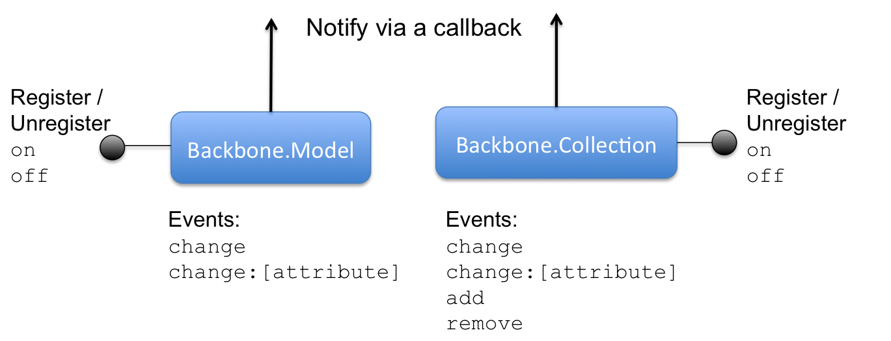
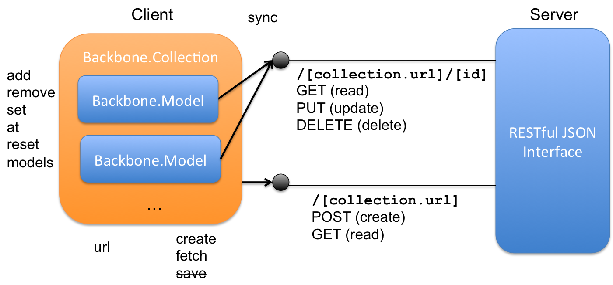

The Router
So far we have worked with a single View application. With the Router, it is possible to select which flow from our application to display based on the broser's url. This way we can separate the profile displaying from the profile editing functionalities.
The Router is also connected with the Backbone.History module for back/forward browser page history navigation.
Routes
The way the Router set its routes is very similar to the Node.js path configuring. The key difference is: while a Node.js path does not have to care about the others, when we switch routes on Backbone.js we have to care about removing the current displayed View from sight before showing the newly selected one.
The routes use regular expressions to filter the paths. In order to create a catch-all route, the * symbol can be used, but with some trailing characters like in *splat. Using a * alone will generate a parsing error.
var Router = Backbone.Router.extend({ routes: { "": "viewProfile", "edit": "editProfile", "*splat": "notFound" }, viewProfile: function() { var userModel = new UserModel(), profileView = new ProfileView({ model: userModel }); this.setView(profileView); }, editProfile: function(userId) { var userModel = new UserModel(), editProfileView = new EditProfileView({ model: userModel }); this.setView(editProfileView); }, notFound: function() { ... }, setView: function( view ) { ... } });
The Router is commonly used as the Backbone.js central App object, but this configuration is not mandatory. In fact, a Backbone application can have multiple routers, as well as sub-routers that handle sub-paths.
The Router navigate() method
Whenever you reach a point in your application that you'd like to save as a URL, call navigate in order to update the URL. If you also wish to call the route function, set the trigger option to true. To update the URL without creating an entry in the browser's history, set the replace option to true.
The History
The History serves as a global router (per frame) to handle hashchange events or pushState, match the appropriate route, and trigger callbacks. You shouldn't ever have to create one of these yourself since Backbone.history already contains one.
The History start() method
When all of your Routers have been created, and all of the routes are set up properly, call Backbone.history.start() to begin monitoring hashchange events, and dispatching routes.
Subsequent calls to Backbone.history.start() will throw an error, and Backbone.History.started is a boolean value indicating whether it has already been called.
History pushState
pushState support exists on a purely opt-in basis in Backbone. Older browsers that don't support pushState will continue to use hash-based URL fragments, and if a hash URL is visited by a pushState-capable browser, it will be transparently upgraded to the true URL.
Note that using real URLs requires your web server to be able to correctly render those pages, so back-end changes are required as well. For example, if you have a route of /documents/100, your web server must be able to serve that page, if the browser visits that URL directly.
For full search-engine crawlability, it's best to have the server generate the complete HTML for the page ... but if it's a web application, just rendering the same content you would have for the root URL, and filling in the rest with Backbone Views and JavaScript works fine.
Exercise 8
Open the exercise8.html file on the main project folder. At the bottom of the body, open a new script tag and:
- Create two views similar to the one from Exercise 7, this time creating a ProfileView and a EditProfileView. The file exercise8.html provides one template for each View.
- Observe that the save event should be on the EditProfileView.
- Use the code provided above to create a router.
- Add a initialize method to the Router, and call Backbone.history.start() inside it.
- Implement the switching of the Views on the setView method.
- Instance your router, use the edit profile link to navigate and test the back/foward browser actions.
Collections
Collections are ordered sets of models. You can bind "change" events to be notified when any model in the collection has been modified, listen for "add" and "remove" events, fetch the collection from the server, and use a full suite of Underscore.js methods.
Any event that is triggered on a model in a collection will also be triggered on the collection directly, for convenience. This allows you to listen for changes to specific attributes in any model in a collection, for example: documents.on("change:selected", ...).
Collection Methods
By its "array-like" nature, the Collection is compatible with the Underscore.js library and so inherits a total of 46 functional methods from it. You can see the whole list here.
Apart from that methods, a few of the most commonly used Collections methods include:
- add
- create
- remove
- set
- get
- reset
- comparator
- at
- slice
- parse
- where
- pluck
- push
- pop
We will see some of these methods in further detail on this lecture.
Collection Events
Collections share some of its events with the Models, but they also have some events that are exclusive to them. Below we have the list of built-in events that can be fired by Collections and sometimes also by Models:
- "add" (model, collection, options) — when a model is added to a collection.
- "remove" (model, collection, options) — when a model is removed from a collection.
- "update" (collection, options) — single event triggered after any number of models have been added or removed from a collection.
- "reset" (collection, options) — when the collection's entire contents have been replaced.
- "sort" (collection, options) — when the collection has been re-sorted.
- "change" (model, options) — when a model's attributes have changed.
- "change:[attribute]" (model, value, options) — when a specific attribute has been updated.
- "destroy" (model, collection, options) — when a model is destroyed.
- "request" (model_or_collection, xhr, options) — when a model or collection has started a request to the server.
- "sync" (model_or_collection, resp, options) — when a model or collection has been successfully synced with the server.
- "error" (model_or_collection, resp, options) — when a model's or collection's request to the server has failed.
- "invalid" (model, error, options) — when a model's validation fails on the client.
- "all" — this special event fires for any triggered event, passing the event name as the first argument.
The Collection "model" attribute
The Collection model attribute specifies which kind of model the Collection will hold (don't you say?). When we determine this attribute, we can pass raw attributes objects (and arrays) to the Collection's add, create and reset methods and the attributes will be converted into a model of the proper type.
var Library = Backbone.Collection.extend({ model: Book });
The Collection models
The Collection models is a raw access to the JavaScript array of models inside the collection. Usually you will want to use get and at to get the model instances, or the Underscore methods to do so.
The Collection comparator() Method
By default there is no comparator for a collection. If you define a comparator, it will be used to maintain the collection in sorted order. This means that as models are added, they are inserted at the correct index in collection.models.
A comparator can be defined as a sortBy (pass a function that takes a single argument), as a sort (pass a comparator function that expects two arguments), or as a string indicating the attribute to sort by.
The Collection url or url()
Set the url property (or function) on a collection to reference its location on the server. Models within the collection will use url to construct URLs of their own.
var Notes = Backbone.Collection.extend({ url: '/notes' }); // Or, something more sophisticated: var Notes = Backbone.Collection.extend({ url: function() { return this.document.url() + '/notes'; } });
The Collection sync() Method
Uses Backbone.sync to persist the state of a collection to the server. Can be overridden for custom behavior.
Exercise 9
Start your server by running grunt serverExpress. Login to the social network API going to localthost:3000/login.html. After logged in, open the exercise9.html file on the main project folder.
From now on as the code will grow larger, create a separate script file named socialnetwork.js and save it on the project's scripts folder (public/assets/js). Link the script file at the end of your document and follow the instructions below:
- Copy the code from your previous exercise, so that your script already have the ProfileView and the EditProfileView running and working with the Router.
- Create a Collection named AvailableUsersList with url attribute = '/users/available' and model = UserModel.
- Create a method called loadCollections() on your ProfileView. Call it at the end of the initialize method.
- Inside loadCollections, create a collection instance of AvailableUsersList named users. Set the View to listenTo the collection's update event. On the listener callback, log the fetched results.
-
We are using the update built-in event. So let's check the list of built-in events on this lecture [Collections Events] and see that it receives two parameters. Use these parameters to log:
- A custom options parameter that we will pass on the fetch call: {label:'Available Users Collection'}.
- The collection.models.
- Create the three collections as listed below. Create instances of those collections on the same way you did for the AvailableUsersList on the loadCollections() method, fetch and log them accordingly with a custom label for each.
//=============================[ COLLECTIONS ]============================== var FriendsRequestsList = Backbone.Collection.extend({ url: '/friendships/requests' }); var FriendsRequestedList = Backbone.Collection.extend({ url: '/friendships/requested' }); var FriendsList = Backbone.Collection.extend({ url: '/friendships/me' });
Views + Collections
Backbone Views listens to the Collections events the same way it does for Models. They key difference between the combination Views + Collections and the View + Model is on the render method implementation.
Usually for rendering a Collection, the View will optionally filter the contents to be shown and then iterate on the selected elements from the collection and append them one by one on its DOM element.
This is far from optimized and the main reason for the creation of the Marionette.js library. Marionette main goal is to provide a better way for Backbone Views to render Collections and other composite data structures, besides avoiding memory leaks caused by ghost views.
Rendering Collections
It is a good practice on Backbone.js that a View could call the render method many times and still have a consistent display (and not to have something rendered more than once inside its element). Because of that, before rendering a collection it is wise to clean the this.$el.
render: function() { var self = this; this.$el.html(''); // clean before start this.collection.forEach(function(model, index){ self.$el.append( self.template(model.attributes)); }); },
Exercise 10-a
Open the file exercise10.html and link your socialnetwork.js script into it. This file contains the needed templates for the new Views.
- Create a new View called AvailableUsersView, OUTSIDE OF THE ROUTER, to render the AvailableUsersList collection. The render method should follow the example above.
- Don't forget to pass a AvailableUsersList INSTANCE as the collection parameter when you instanciate the View.
- Make the View listen to the update event of the Collection and pass the this.render as a callback.
- Use the #availableUsersTemplate as the source script for the AvailableUsersView template.
- Pass an el parameter to the View when you instanciate it (#auxiliarContainer), so that the render does not need to append it to the DOM.
- Give it a try, you should be able to see a list of users at the bottom of the page.
Now that you have a working Collection View, let's make it render where it should be.
- Create a loadChildrenViews method on the ProfileView and create a AvailableUsersView inside it. Remove it from outside the router.
- Pass #availableUsersContainer as the el for the collection view.
- As that element (#availableUsersContainer) is part of the ProfileView template, you will only call loadChildrenViews after your ProfileView has rendered, inside its render method.
If all went ok, you should now view a list of available friends to add on the #availableUsersContainer div.
Extending Views
Every time we defined a View so far, we called the Backbone.View.extend method. So the Views inherited all the Backbone.View properties, including the cabapility of being extended.
Now we are going to take advantage of that: we will create a common CollectionView that will host all the common features we want on our Collection Views.
First we need to determine which would be those common features. We already saw a code example for one above: the render a collection feature. Besides that we also want our Views to listenTo the collections update event and re-render themselves.
var CollectionView = Backbone.View.extend({ initialize: function() { this.listenTo(this.collection, "update", this.render); this.collection.fetch(); }, render: function() { ... } });
What the Collections cannot share, in our case, are their events and their templates. This is case-specific: in a differente application the Collections could share other features than those.
var AvailableUsersView = CollectionView.extend({ events: { ... }, template: _.template($('#userTemplate').html()) });
Exercise 10-b
We have other lists of users to render, so let's take advantage of the extend method and define a common Collection View.
- Follow the two code snippets above and define your AvailableUsersView as an extention of the common CollectionView.
- Create other 3 Views, one for each of the Collections we logged on the Exercise 9, also extending from the common CollectionView.
-
When you instanciate the Views, remember to pass the right collection and the right el for each View:
- FriendsRequestsList: #friendRequestsContainer
- FriendsRequestedList: #myRequestsContainer
- FriendsList: #myFriendsContainer